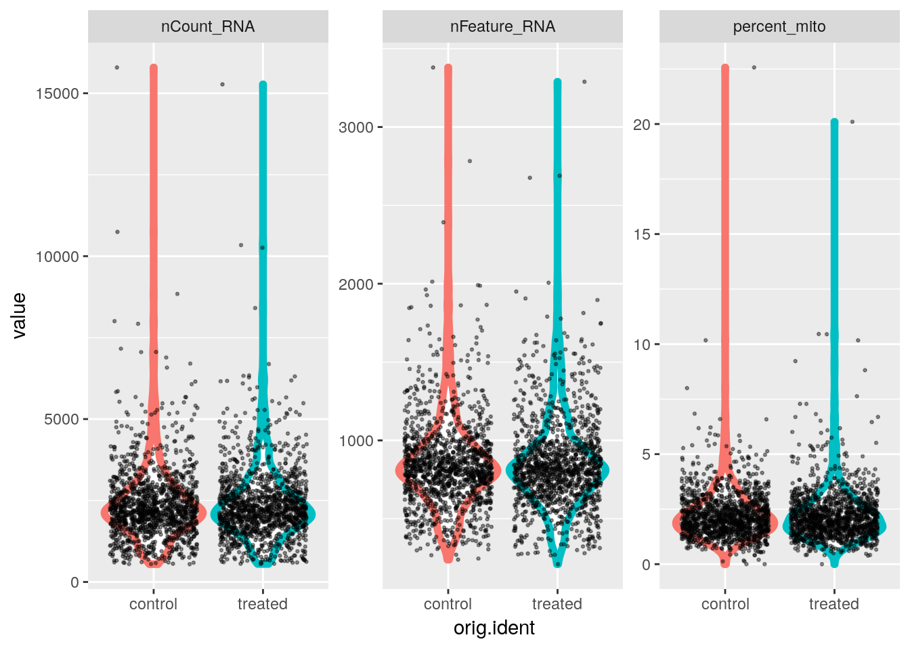
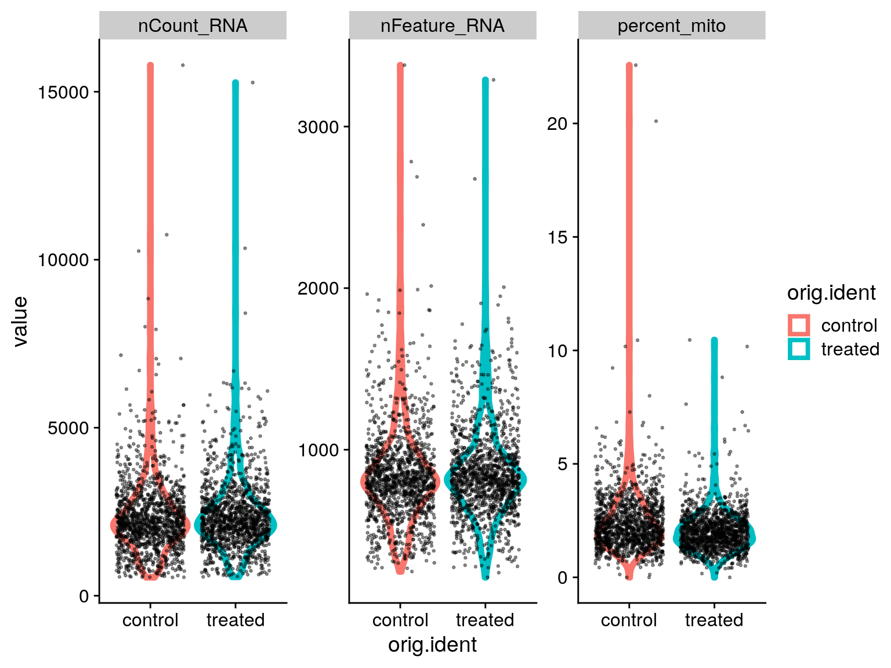
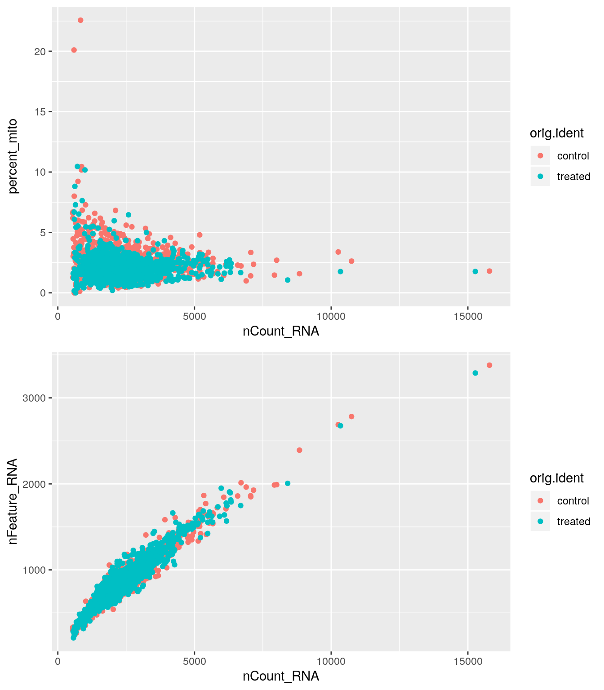

Data Filtering and Quality Control
Ryan Sheridan
August 13th, 2019
Creating a Seurat object
Single-cell RNA-seq counts are usually stored as a sparse matrix due to the high percentage of zeros. In a sparse matrix zeros are removed and only non-zero values are stored, which saves memory and speeds up operations.
The Read10X function can be used with the output directory generated by Cell Ranger to load the counts data as a sparse matrix. However, our data is saved as a comma-separated table, which can be loaded as a data.frame and then converted to a sparse matrix.
# Import matrix of counts
data_url <- "https://scrnaseq-workshop.s3-us-west-2.amazonaws.com"
pbmc_mtx <- file.path(data_url, "PBMC_cDNA.csv.gz") %>%
read_csv() %>%
column_to_rownames("X1") %>%
as.sparse()
pbmc_mtx[1:10, 1:10]#> 10 x 10 sparse Matrix of class "dgCMatrix"
#>
#> AL627309.1 . . . . . . . . . .
#> RP11-206L10.2 . . . . . . . . . .
#> LINC00115 . . . . . . . . . .
#> NOC2L . . . . . . . . 1 .
#> KLHL17 . . . . . . . . . .
#> PLEKHN1 . . . . . . . . . .
#> HES4 . . . . . 2 . . . .
#> ISG15 . . . . . 4 . 1 . 2
#> AGRN . . . . . . . . . .
#> C1orf159 . . . . . . . . . .# Calculate fraction of zeros
n_zeros <- pbmc_mtx[pbmc_mtx == 0] %>%
length()
n_zeros / length(pbmc_mtx)#> [1] 0.9328582Analysis using Seurat is centered around the Seurat object, which serves as a container to store the input data and any results that are generated. A Seurat object can be created from our sparse matrix using the CreateSeuratObject function.
When processing multiple scRNA-seq samples with cellranger aggr, the cell barcodes will be labeled with a sample number. This sample number can be easily extracted and saved using the names.field and names.delim options.
The CreateSeuratObject function also allows us to perform some initial QC filtering. The min.cells option filters features (genes) to only include those that are present in a minimum number of cells.
# Create Seurat object using gene expression data
sobj <- pbmc_mtx %>%
CreateSeuratObject(
min.cells = 5, # Remove genes that are detected in <5 cells
names.delim = "-",
names.field = 2
)Interacting with the Seurat object
Handling multiple assays
The Seurat object is organized into a heirarchy of data structures with the outermost layer including a number of “slots”, which can be accessed using the @ operator.
With Seurat v3.0, the Seurat object has been modified to allow users to easily store multiple scRNA-seq assays (CITE-seq, cell hashing, etc.) in the same object. The data from each assay is stored as a list in the assays slot. To switch between different assays users can change the value stored in the active.assay slot. We can also view the current default assay using the DefaultAssay function. Many Seurat functions also include an assay argument that lets users specify the desired assay.
Seurat object structure
- assays
- RNA
- counts
- data
- var.features
- ADT
- counts
- data
- var.features
- RNA
- active.assay
- active.idents
- meta.data
# Assays are stored as a list in the "assays" slot
sobj@assays#> $RNA
#> Assay data with 12572 features for 2700 cells
#> First 10 features:
#> AL627309.1, RP11-206L10.2, LINC00115, NOC2L, KLHL17, PLEKHN1,
#> HES4, ISG15, AGRN, C1orf159# The Seurat object stores the current default assay
sobj@active.assay#> [1] "RNA"DefaultAssay(sobj)#> [1] "RNA"Retrieving raw and normalized counts
The data from each assay is stored as separate Assay objects that are also divided into slots that store the raw and normalized counts along with other downstream results. We can use the GetAssayData function to retrieve the raw and normalized counts matrices.
# Raw counts
sobj@assays$RNA@counts[1:5, 1:10]#> 5 x 10 sparse Matrix of class "dgCMatrix"
#>
#> AL627309.1 . . . . . . . . . .
#> RP11-206L10.2 . . . . . . . . . .
#> LINC00115 . . . . . . . . . .
#> NOC2L . . . . . . . . 1 .
#> KLHL17 . . . . . . . . . .sobj %>%
GetAssayData(slot = "counts") %>%
.[1:5, 1:10]#> 5 x 10 sparse Matrix of class "dgCMatrix"
#>
#> AL627309.1 . . . . . . . . . .
#> RP11-206L10.2 . . . . . . . . . .
#> LINC00115 . . . . . . . . . .
#> NOC2L . . . . . . . . 1 .
#> KLHL17 . . . . . . . . . .# Normalized counts
# This matrix is the same as counts since we haven't normalized the data yet
sobj@assays$RNA@data[1:5, 1:10]#> 5 x 10 sparse Matrix of class "dgCMatrix"
#>
#> AL627309.1 . . . . . . . . . .
#> RP11-206L10.2 . . . . . . . . . .
#> LINC00115 . . . . . . . . . .
#> NOC2L . . . . . . . . 1 .
#> KLHL17 . . . . . . . . . .sobj %>%
GetAssayData(slot = "data") %>%
.[1:5, 1:10]#> 5 x 10 sparse Matrix of class "dgCMatrix"
#>
#> AL627309.1 . . . . . . . . . .
#> RP11-206L10.2 . . . . . . . . . .
#> LINC00115 . . . . . . . . . .
#> NOC2L . . . . . . . . 1 .
#> KLHL17 . . . . . . . . . .Retrieving cell and features names
Cell barcodes and gene names can be retrieved from the Seurat object using the colnames and rownames functions, respectively. We can run these functions directly on the Seurat object to automatically retrieve information for the default assay.
# Get cell names
sobj@assays$RNA@counts %>%
colnames() %>%
head(20)#> [1] "AAACATACAACCAC-1" "AAACATTGAGCTAC-1" "AAACGCTGACCAGT-1"
#> [4] "AAACGCTGGTTCTT-1" "AAAGTTTGATCACG-1" "AAATCATGACCACA-1"
#> [7] "AACATTGATGGGAG-1" "AACCGATGCTCCCA-1" "AACCGCCTCTACGA-1"
#> [10] "AACCTTACGCGAGA-1" "AACTCACTCAAGCT-1" "AACTCGGAAAGTGA-1"
#> [13] "AAGATGGAGATAAG-1" "AAGCCATGTCTCGC-1" "AAGCGTACGTCTTT-1"
#> [16] "AAGGTCTGACAGTC-1" "AAGTCTCTCGGAGA-1" "AATAGGGAGAATGA-1"
#> [19] "AATGGAGAATCGTG-1" "AATGGCTGTAAAGG-1"sobj %>%
Cells() %>%
head(20)#> [1] "AAACATACAACCAC-1" "AAACATTGAGCTAC-1" "AAACGCTGACCAGT-1"
#> [4] "AAACGCTGGTTCTT-1" "AAAGTTTGATCACG-1" "AAATCATGACCACA-1"
#> [7] "AACATTGATGGGAG-1" "AACCGATGCTCCCA-1" "AACCGCCTCTACGA-1"
#> [10] "AACCTTACGCGAGA-1" "AACTCACTCAAGCT-1" "AACTCGGAAAGTGA-1"
#> [13] "AAGATGGAGATAAG-1" "AAGCCATGTCTCGC-1" "AAGCGTACGTCTTT-1"
#> [16] "AAGGTCTGACAGTC-1" "AAGTCTCTCGGAGA-1" "AATAGGGAGAATGA-1"
#> [19] "AATGGAGAATCGTG-1" "AATGGCTGTAAAGG-1"sobj %>%
colnames() %>%
head(20)#> [1] "AAACATACAACCAC-1" "AAACATTGAGCTAC-1" "AAACGCTGACCAGT-1"
#> [4] "AAACGCTGGTTCTT-1" "AAAGTTTGATCACG-1" "AAATCATGACCACA-1"
#> [7] "AACATTGATGGGAG-1" "AACCGATGCTCCCA-1" "AACCGCCTCTACGA-1"
#> [10] "AACCTTACGCGAGA-1" "AACTCACTCAAGCT-1" "AACTCGGAAAGTGA-1"
#> [13] "AAGATGGAGATAAG-1" "AAGCCATGTCTCGC-1" "AAGCGTACGTCTTT-1"
#> [16] "AAGGTCTGACAGTC-1" "AAGTCTCTCGGAGA-1" "AATAGGGAGAATGA-1"
#> [19] "AATGGAGAATCGTG-1" "AATGGCTGTAAAGG-1"# Get feature names
sobj@assays$RNA@counts %>%
rownames() %>%
head(20)#> [1] "AL627309.1" "RP11-206L10.2" "LINC00115" "NOC2L"
#> [5] "KLHL17" "PLEKHN1" "HES4" "ISG15"
#> [9] "AGRN" "C1orf159" "TNFRSF18" "TNFRSF4"
#> [13] "SDF4" "B3GALT6" "UBE2J2" "ACAP3"
#> [17] "PUSL1" "CPSF3L" "GLTPD1" "DVL1"sobj %>%
rownames() %>%
head(20)#> [1] "AL627309.1" "RP11-206L10.2" "LINC00115" "NOC2L"
#> [5] "KLHL17" "PLEKHN1" "HES4" "ISG15"
#> [9] "AGRN" "C1orf159" "TNFRSF18" "TNFRSF4"
#> [13] "SDF4" "B3GALT6" "UBE2J2" "ACAP3"
#> [17] "PUSL1" "CPSF3L" "GLTPD1" "DVL1"# Get cell (colums) and feature (rows) counts
ncol(sobj)#> [1] 2700nrow(sobj)#> [1] 12572Accessing project meta.data
The Seurat object includes a data.frame that contains cell meta data for all of the assays present in the Seurat object. This data.frame is stored in the meta.data slot and can be accessed using double brackets ([[]]) or the FetchData function. As we move through our analysis, information will be automatically added to the meta.data. We can also manually add or modify information stored in the meta.data, which is useful when creating custom plots.
Initially the meta.data table will include the number of counts for each cell and the number of genes (or other features) detected for each cell. There is also an orig.ident column which contains the original cell labels (identities). Since we used the names.field argument when creating our Seurat object, this column will include the sample number.
# The meta.data table contains stats for each cell
sobj@meta.data %>%
head()#> orig.ident nCount_RNA nFeature_RNA
#> AAACATACAACCAC-1 1 2419 779
#> AAACATTGAGCTAC-1 1 4901 1350
#> AAACGCTGACCAGT-1 1 2174 781
#> AAACGCTGGTTCTT-1 1 2259 789
#> AAAGTTTGATCACG-1 1 1265 441
#> AAATCATGACCACA-1 1 4125 1365sobj[["nCount_RNA"]] %>%
head()#> nCount_RNA
#> AAACATACAACCAC-1 2419
#> AAACATTGAGCTAC-1 4901
#> AAACGCTGACCAGT-1 2174
#> AAACGCTGGTTCTT-1 2259
#> AAAGTTTGATCACG-1 1265
#> AAATCATGACCACA-1 4125sobj %>%
FetchData(vars = "nCount_RNA") %>%
head()#> nCount_RNA
#> AAACATACAACCAC-1 2419
#> AAACATTGAGCTAC-1 4901
#> AAACGCTGACCAGT-1 2174
#> AAACGCTGGTTCTT-1 2259
#> AAAGTTTGATCACG-1 1265
#> AAATCATGACCACA-1 4125# FetchData can also be used to retrieve other data from the Seurat object
sobj %>%
FetchData(
vars = "CD8A",
slot = "counts"
) %>%
head()#> CD8A
#> AAACATACAACCAC-1 1
#> AAACATTGAGCTAC-1 0
#> AAACGCTGACCAGT-1 0
#> AAACGCTGGTTCTT-1 1
#> AAAGTTTGATCACG-1 0
#> AAATCATGACCACA-1 0Setting cell identities
The cell identities are used by various functions when grouping and plotting cells. When first creating a Seurat object, the cell identities will be set to the same values present in the orig.ident column in the meta.data table. The current cell identities are stored in the active.ident slot and can be accessed using the Idents function. Cell identities can be renamed using the RenameIdents function. Changing the cell identites will not alter the names stored in the meta.data table or vice versa. To update the meta.data table, we can use the AddMetaData function.
# By default the cell identity is set to the project name
sobj@active.ident %>%
head()#> AAACATACAACCAC-1 AAACATTGAGCTAC-1 AAACGCTGACCAGT-1 AAACGCTGGTTCTT-1
#> 1 1 1 1
#> AAAGTTTGATCACG-1 AAATCATGACCACA-1
#> 1 1
#> Levels: 1 2sobj %>%
Idents() %>%
head()#> AAACATACAACCAC-1 AAACATTGAGCTAC-1 AAACGCTGACCAGT-1 AAACGCTGGTTCTT-1
#> 1 1 1 1
#> AAAGTTTGATCACG-1 AAATCATGACCACA-1
#> 1 1
#> Levels: 1 2# Rename cell identities
sobj <- sobj %>%
RenameIdents(
"1" = "control",
"2" = "treated"
)
sobj %>%
Idents() %>%
head()#> AAACATACAACCAC-1 AAACATTGAGCTAC-1 AAACGCTGACCAGT-1 AAACGCTGGTTCTT-1
#> control control control control
#> AAAGTTTGATCACG-1 AAATCATGACCACA-1
#> control control
#> Levels: control treated# Add cell identities to the meta.data table
sobj <- sobj %>%
AddMetaData(
metadata = Idents(sobj),
col.name = "orig.ident"
)
sobj@meta.data %>%
head()#> orig.ident nCount_RNA nFeature_RNA
#> AAACATACAACCAC-1 control 2419 779
#> AAACATTGAGCTAC-1 control 4901 1350
#> AAACGCTGACCAGT-1 control 2174 781
#> AAACGCTGGTTCTT-1 control 2259 789
#> AAAGTTTGATCACG-1 control 1265 441
#> AAATCATGACCACA-1 control 4125 1365Subsetting the Seurat object
The cells and features present in the Seurat object can be filtering using the subset function.
# Subset based on gene expression
sobj %>%
subset(subset = CD8A > 1) %>%
ncol()#> [1] 107# Subset based on cell identity
sobj %>%
subset(idents = "control") %>%
ncol()#> [1] 1342# Subset with vector of features
sobj %>%
subset(features = c("CD4", "CD8A")) %>%
rownames()#> [1] "CD8A" "CD4"# Subset with vector of cell barcodes
sobj %>%
subset(cells = c("AAACGCTGACCAGT-1", "AAATCATGACCACA-1", "TTTCGAACACCTGA-2")) %>%
colnames()#> [1] "AAACGCTGACCAGT-1" "AAATCATGACCACA-1" "TTTCGAACACCTGA-2"# Subset using multiple criteria
sobj %>%
subset(CD8A > 1, idents = "control") %>%
ncol()#> [1] 56# Subset based on meta.data columns
sobj %>%
subset(nFeature_RNA > 250)#> An object of class Seurat
#> 12572 features across 2697 samples within 1 assay
#> Active assay: RNA (12572 features)Other data slots
sobj@reductions
sobj@graphsAssessing quality
Metrics that are commonly used to assess cell quality include:
- Number of counts per cell barcode
- Number of genes per barcode
- The percentage of counts from mitochondrial genes per barcode
A low number of counts, a low number of detected genes, and a high percentage of mitochondrial counts suggests that the cell had a broken membrane and the cytoplasmic mRNA leaked out. Conversely, an abnormally high number of counts and detected genes could indicate the presence of a doublet.
Quantify mitochondrial counts
To calculate the percentage of mitochondrial counts for each cell we can use the PercentageFeatureSet function.
# Calculate percentage of mitochondrial reads for each cell
sobj <- sobj %>%
PercentageFeatureSet(
pattern = "^MT-",
col.name = "percent_mito"
)
sobj@meta.data %>%
head()#> orig.ident nCount_RNA nFeature_RNA percent_mito
#> AAACATACAACCAC-1 control 2419 779 3.017776
#> AAACATTGAGCTAC-1 control 4901 1350 3.795144
#> AAACGCTGACCAGT-1 control 2174 781 3.817847
#> AAACGCTGGTTCTT-1 control 2259 789 3.098716
#> AAAGTTTGATCACG-1 control 1265 441 3.478261
#> AAATCATGACCACA-1 control 4125 1365 4.581818EXERCISE: Create violin/box plots comparing cell metrics
# Create violin/boxplots comparing nCount, nFeature, and percent_mito for each sample
# sobj@meta.data %>%ANSWER

EXERCISE: Create scatter plots comparing cell metrics
# Create a scatter plot comparing nCount and percent_mito
# sobj@meta.data %>%
# Create a scatter plot comparing nCount and nFeature
# sobj@meta.data %>%ANSWER

Filtering cells
To filter cells we can use the subset function.
# Filter cells based on number of genes and percent mito UMIs
sobj <- sobj %>%
subset(
nFeature_RNA > 250 & # Remove cells with <250 detected genes
nFeature_RNA < 2500 & # Remove cells with >2500 detected genes (could be doublets)
percent_mito < 10 # Remove cells with >10% mitochondrial reads
)
# Add filtering cutoffs on original scatter plots
p_1 <- p_1 +
geom_hline(yintercept = 10, linetype = 2)
p_2 <- p_2 +
geom_hline(yintercept = c(250, 2500), linetype = 2)
CombinePlots(
plots = list(p_1, p_2),
nrow = 2
)
# How many cells were removed?
ncol(sobj)#> [1] 2686Saving the Seurat object
dir.create("data", showWarnings = FALSE)
write_rds(sobj, path = "data/filtered_sobj.rds")